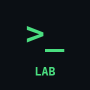

Uygulamalarım
iPhone'da Safari ile aç, sonra Ana Ekrana Ekle.

Linux LabSanal terminal, 190+ görev, bash, vim, git, SD-WAN TAC senaryoları
NetDevOps LabPython, pytest, Git, REST API, CI/CD, Docker, Kubernetes, YANG, NETCONF, RESTCONF, gNMI, Ansible, Terraform
A2 NederlandsInburgeringsexamen A2 hazırlık
iPhone'a kurulum
- Uygulamayı Safari'de aç
- Alttaki Paylaş butonuna dokun
- Ana Ekrana Ekle seç
- Ana ekrandaki ikondan aç, tam ekran ve offline çalışır